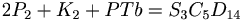
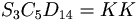

De: La Frikipedia, la enciclopedia extremadamente seria.
De: La Frikipedia, la enciclopedia extremadamente seria. De: La Frikipedia, la enciclopedia extremadamente seria.
| De la serie Elementos químicos: | ||
|
| ||
| Nombre oficial: | Suciedad | |
| Otros nombres: | basura, mierda, hediondez... | |
| Serie alquímica: | Salinomarinos | |
| Descubridor: | Profesor Bacterio | |
| Color en tabla: | Cualquiera que no recuerde a limpio | |
| Presente en: | Hogar de tipos que no saben fregar, guarros malolientes y canis | |
| Usos: | Repeler a la peña para dominar el mundo | |
| Estado: | Depende de la situación | |
| Peso kg/puñao: | Depende del estado en el que se encuentre | |
| Estructura: | En forma de bolsa esférica con sorpresitas dentro de ella | |
| Abstracción: | Difícilmente | |
| Humungoso: | Puede, solo depende de si eres un | |
Estado de máxima inspiración divina cuyo objetivo es establecer una raza de guarros malolientes Profesor Bacterio tras intentar crear una supermáquina limpiadora mezclando dos partículas de mierda del WC del McDonalds de la esquina con un piño del Boogeyman. Pero hubo una reacción nuclear de valor a infinito+1+42 que hizo que la casa del Bacterio se llenara de mierda, de ahí el mal olor de su barba. Con "eso" creó la más terrorífica arma química del mundo y parte de Marte.
« »
~ Profesor Bacterio antes de la explosión nuclear
« »
~ Mierda !": Bacterio después de la reacción nuclear
Con esta sencilla ecuación puede observarse de forma resumida cómo con 2 partículas de mierda del McDonalds junto a un piño del Boogeyman (PTb) se creo la suciedad, pero luego el Bacterio descubrió que la suciedad como molécula tenía el mismo poder de ensuciar que la mismísima mierda, de ahí que el Bacterio gritara ¡Mierda!, ya que su experimento fue una mierda mala reacción nuclear.
Tras que el Bacterio la cagara, Ronald McDonald falló en su intento de dominar el mundo, así que se apuntó al cotarro firmandó un contrato basura con el Bacterio para comercializar la suciedad como tal, aunque luego, gracias a la colaboración de cierta raza mundial su uso empezó a ser cotidiano, con lo cual es posible encontrar indicios de S3C5D14 en forma de redes moleculares por toda la zona espiñola y un poco de Bilbao joder. Gracias a esta rareza se han multiplicado los puestos de trabajo como limpiadora, que era parte del plan que tenía McDonald para crear una raza y hacer de ella una raza mayoritaría. La otra parte del plan era que gracias a cierta raza se llenaran de suciedad todas las aglomeraciones urbanas, con la cual se vería como la gente no afectada se desplaza hacia otras zonas donde esta raza no estuviera presente. Así el McDonald podría dominar sobre las zonas pobladas por los sucios y tener un mayor control.
Recientes estudios por parte de científicos borrachos de la Oklahoma University cree que la suciedad podría ser el origen de las razas gitana y Cani (en orden decreciente de importancia), debido a la predilección de estos a acumular suciedad en cualquier estado.
Aunque no lo parezca, la suciedad puede encontrarse en los tres estados de la matería: líquido (en forma de sudor corporal, esta sería la menos peligrosa); gasosa (la mierda echada por las industrias, no cuenta); y la peor y más peligrosa, sólida (en forma de polvo, hongos, basura, etc.). Vamos a estudiar detalladamente cada tipo de suciedad:
«¿Esa mancha? Eeeeeh... sólo es yogur que se me cayó y tal...»
~ Pajillero que no sabe reconocer sus errores higiénicos
«¡Eh, que yo me ducho casi todos los sábados, eh!»
~ Especímen no reconocido predicando sus costumbres higiénicas
«¿Cómo se frega esto...?»
~ Más que posible caso de sucieditis aguda
«¿Illo, iene papé?»
~ Cani tonto que no se ha enterado que tiene torpecientos millones de gramos de papel a su alrededor
«¡Es míiiiiiia, mi tesoro!!»
~ Enfermo de Diógenes con su basura
Antes de nada, cabe decir que si es un cani o un gitano, es sucio, pero seguro.
Para empezar hay que fijarse si sus cuartos desprenden un ligero aroma a rosas que hace que nos den arcadas. Si sufre este síntoma, habrá que preguntarle cual es la última vez que se duchó; si hay un espacio temporal de semana y media, es otro síntoma. Otros métodos no tan eficientes son analizar químicamente el olor del aliento de algunos, aunque debido a la mala hostia de estos (con mala hostia nos referimos a mal olor).
Prosigamos con la investigación. Si en su casa se crían ratas, moscas, mierda o agua estancada en abundancia, este especímen sufre de suciedad severa. Si al finalizar sufres una enfermedad como la malaria, el botulismo o el polio, definitivamente ese guarro macho sufre de sucieditis.
Tabla periódica de los elementos
| ||||||||||||||||||||||||||||||||||||||||||||||||||||||||||||||||||||||||||||||||||||||||||||||||||||||||||||||||||||||||||||||
|
Autor(es):